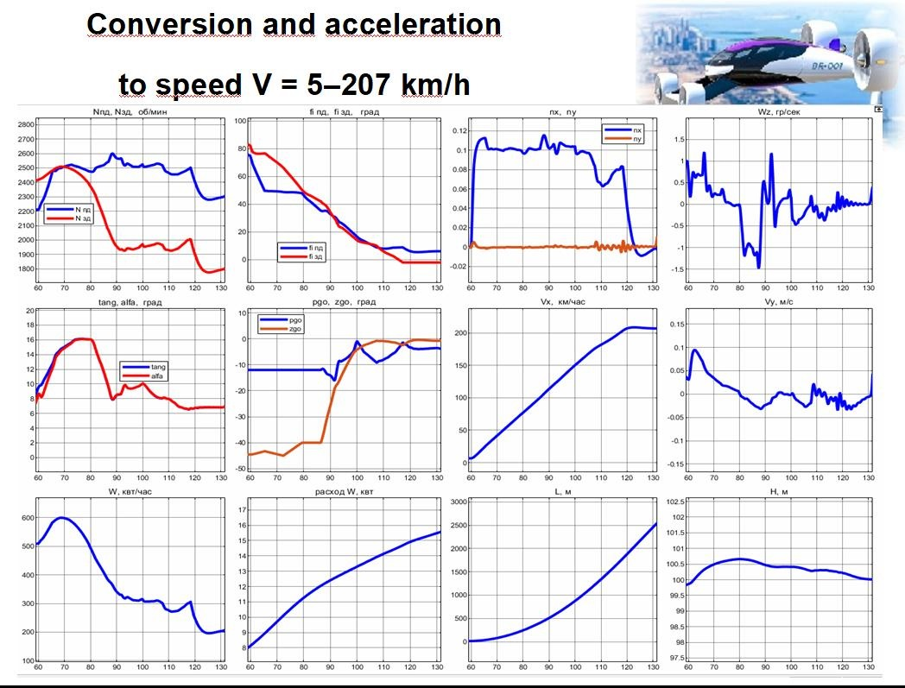

Переходный режим eVTOL: динамика и энергозатраты
Пример моделирования конвертации и разгона конвертоплана. Графики показывают параметры полёта, управляющие воздействия и энергозатраты за один и тот же интервал.
От инженерной задачи к результату
Постановка задачи
Рассчитать конвертацию и разгон при переходе к поступательному полёту, учитывая изменение высоты и энергозатраты.
Модель динамики
Связать обороты и наклон винтов, отклонения органов управления и движение аппарата в модели динамики полёта MATLAB / Simulink.
Балансировка по режимам
Подобрать сочетания тяги, наклона винтов и управляющих воздействий для баланса сил и моментов с учётом потребной мощности.
Проверка перехода
Оценить манёвр в моделировании: скорость, высоту, углы, угловую скорость, перегрузки и энергетический расход.
Результаты моделирования

Продольная скорость
Разгон при переходе к поступательному полёту.
Мощность (W)
Изменение потребной мощности при конвертации и разгоне.
Высота (H)
Изменение высоты в ходе переходного режима.
Остальные параметры полёта и управления — 9 графиков
Обороты винтов
Частоты вращения передних и задних винтов.
Углы наклона винтов
Изменение углов наклона передних и задних винтов при конвертации.
Перегрузки nx и ny
Продольная и вертикальная перегрузки в переходном режиме.
Угловая скорость Wz
Угловая реакция аппарата при выполнении манёвра.
Тангаж и угол атаки
Изменение тангажа и угла атаки при разгоне.
Отклонения органов управления
Управляющие воздействия, обозначенные на исходном графике как pgo и zgo.
Вертикальная скорость
Вертикальное движение в ходе переходного режима.
Энергетический расход (W)
Накопленный расход за показанный интервал моделирования.
Пройденное расстояние (L)
Изменение пути по мере роста продольной скорости.